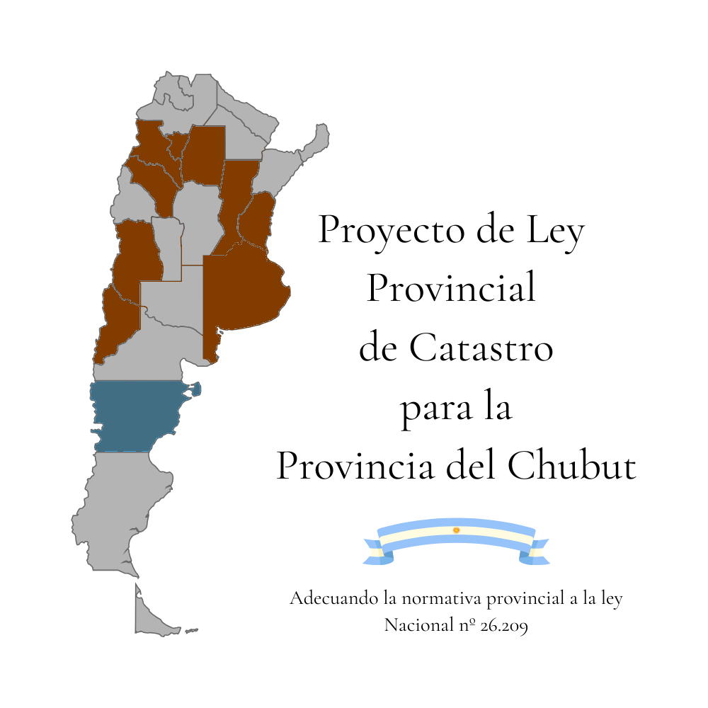

En marrón las provincias que ya aplican la Ley Nacional de Catastro 26.209 (incluyendo a CABA) o equivalente (Bs.As.) y en azul la Provincia del Chubut
Nuevo Versión Disponible
Ya está disponible el borrador actualizado del Proyecto de la ley provincial de catastro del 3 de septiembre de 2025 para descargarlo y agregar cometarios si entras al drive